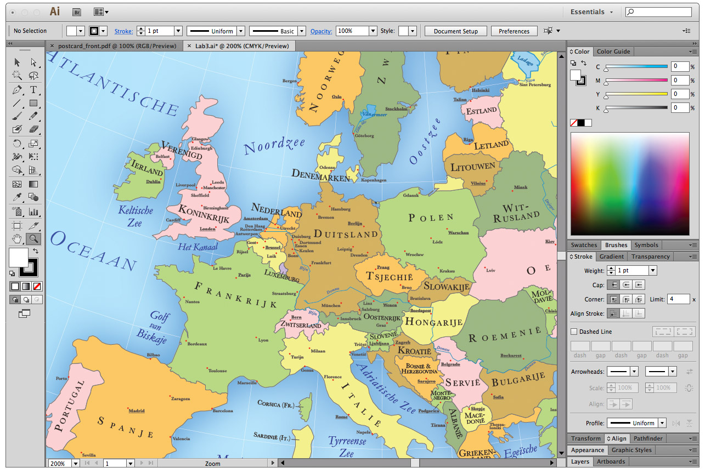
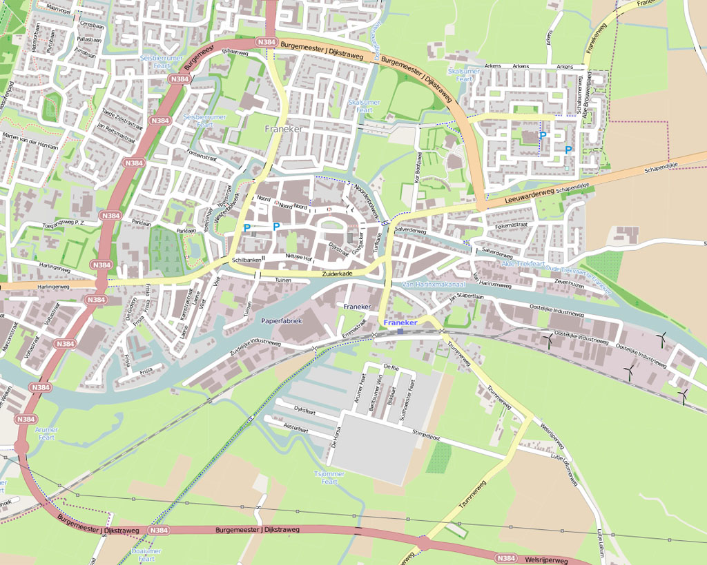
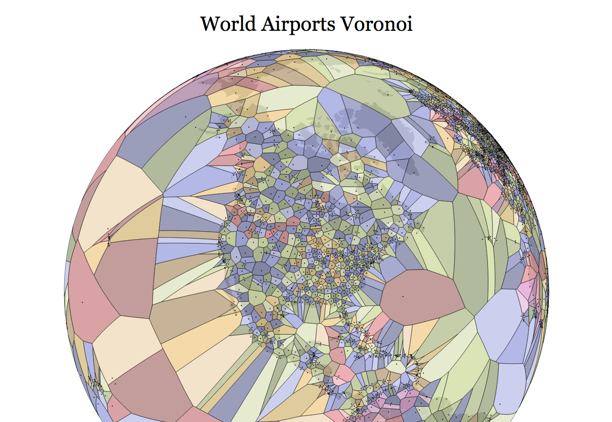
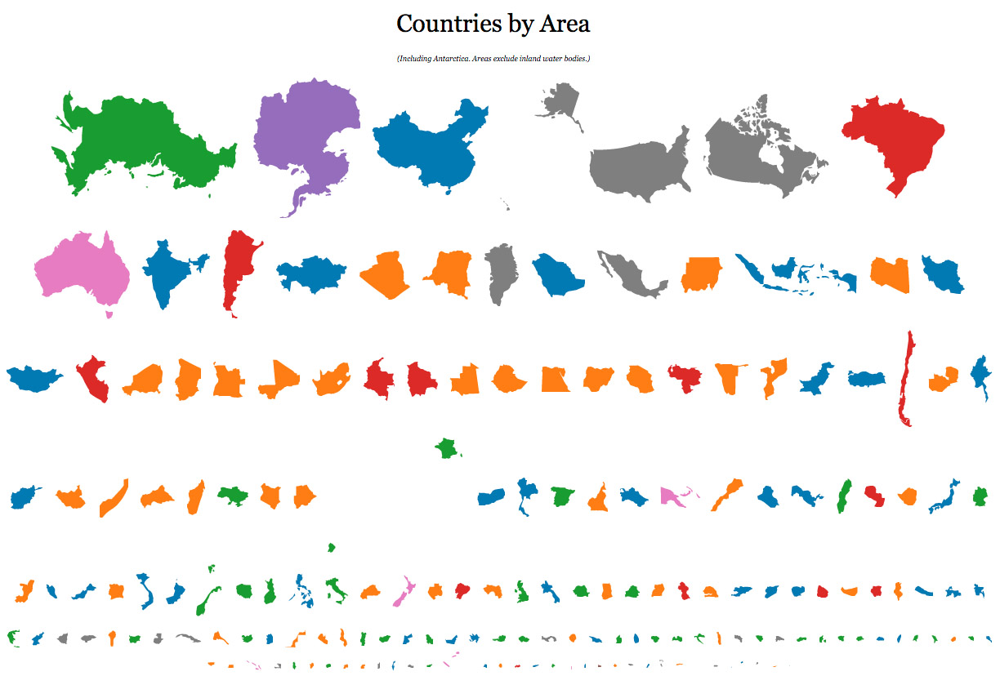
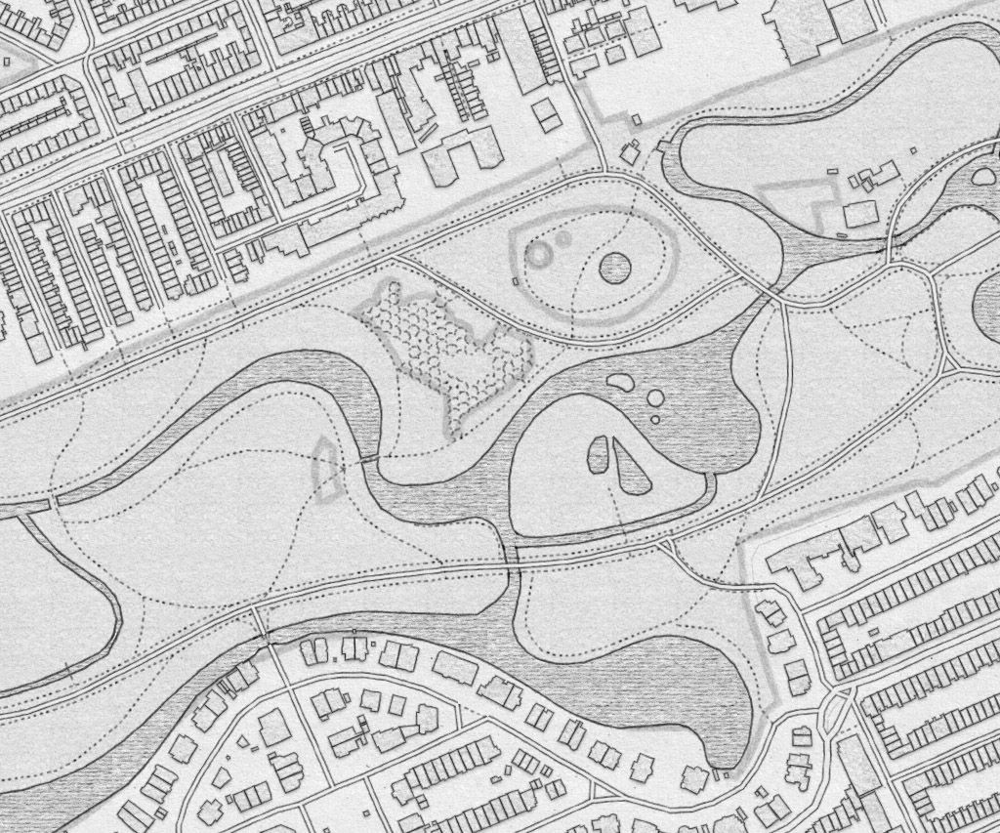

Maptime Amsterdam
SSID: "maptime",
password: "maptime@1119"
Let's introduce ourselves!

About Maptime
Maptime Chapters
Maptime Amsterdam
Montly map hack night ● teach each other the latest cartographic tools
How to make a beautiful map?
Steamboat Springs

ArcGIS
It's easier than ever to make a map!
Maptime Amsterdam
Tonight:
1. Introduction
2. What is a web map?
3. Show and Tell!
4. Workshop Mapbox Studio
Future:
Guest speakers
Leaflet

Leaflet
Leaflet
Cartography with Illustrator
Illustrator
OpenStreetMap
OpenStreetMap

OpenStreetMap
Hand-drawn maps
Hand-drawn maps
Shaded relief maps
Shaded relief maps
QGIS
QGIS
Geospatial data

Geospatial data

GeoJSON
GitHub + GitHub Pages
GitHub

GitHub
Data journalism
Physical maps

Scott Kildall
Talking Data
PostGIS
PostGIS
D3.js
Jason Davies
Jason Davies
Show and Tell!
Cornelis Anthonisz.
Google Earth
GeoGuessr
What is your favourite map?
Greenpeace Hackathon!
Workshop Mapbox Studio

Mapbox Studio

Mapbox Studio
Mapbox Studio
Mapbox Studio
Mapbox Studio
Resources:
Workshop: make a map of Amsterdam!